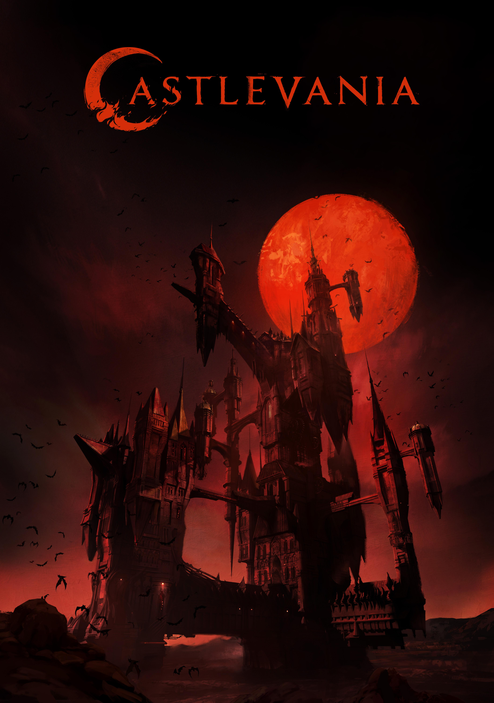

Welcome to the Official Castlevania Series Hub
Castlevania, the critically acclaimed Netflix series, brings to life the dark and thrilling world of the legendary video game franchise. Based on the classic Konami game series, this animated show combines rich storytelling, intricate character development, and stunning visuals to deliver an unforgettable experience.
About the Series
Set in a medieval world plagued by the monstrous Dracula, Castlevania follows the story of Trevor Belmont, a legendary vampire hunter, who is determined to save Eastern Europe from the dark forces unleashed by the Count. With the help of powerful allies, including the enigmatic magician Sypha Belnades and the troubled vampire Dracula’s own son, Alucard, Trevor battles against overwhelming odds to bring justice and restore peace.
Why Castlevania is a Must-Watch
- Engaging Storyline: Castlevania weaves a complex narrative full of twists and turns, exploring themes of redemption, power, and betrayal.
- Rich Animation: With its breathtaking animation and detailed character designs, the series captures the essence of the gothic world it portrays.
- Dynamic Characters: From the tragic Dracula to the heroic Belmont, each character is deeply fleshed out, adding depth to the storyline.
- Epic Battles: The series is known for its intense and well-choreographed action sequences, bringing the battles between good and evil to life.
Watch the Series
Ready to dive into the dark and captivating world of Castlevania? Stream all seasons on Netflix now and experience the epic saga that has captivated audiences worldwide.